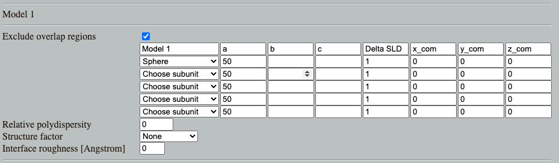
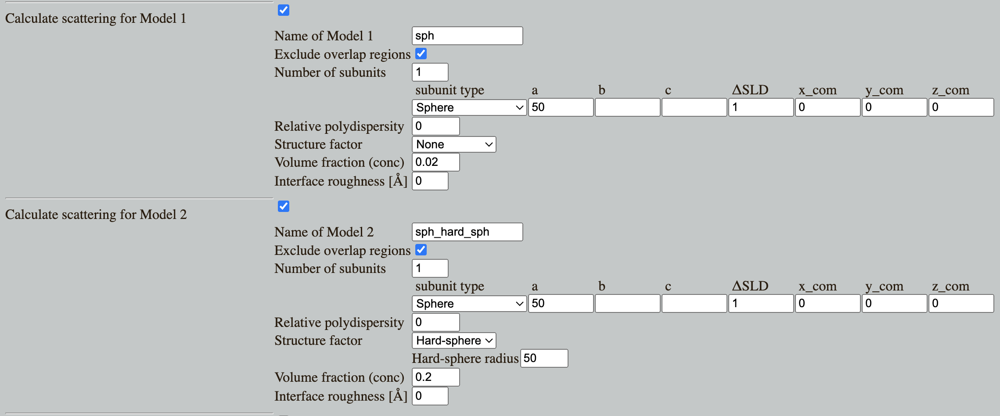

Home
Tutotial: Spheres
Tutorial contributors: Andreas Haahr Larsen, Martin Cramer Pedersen, Jacob Kierkensgaard
Before you start
- Download and install SasView
Learning outcomes
- Basic understanding of small-angle scattering
- Get intuition about the scattering from spheres and other shapes
- Learn simple model fitting in SasView
- Learn how interparticle interaction and polydispersity affects the scattering
Part 1: Monodisperse spheres
Go to: Shape2SAS, and simulate a sphere with a 50 Å radius You may have to click on the three lines in the top-left of the window, then "Calculations". Set parameters (default values for a 50 Å sphere) and press Submit.
- Shape2SAS generates three plots (besides from visualization of the particle):
- A pair distance distribution. This is important in SAXS and SANS, but will not be used in this tutorial. See the tutorial: Pair distance distribution, p(r).
- Calculated scattering, normalized. This is the form factor, P(q).
- Simulated scattering, showing what real SAXS or SANS data for that sample may look like.
Comment on the resulting scattering. Try to compare with a smaller or larger sphere (as Model 2), and with other shapes. Notice the inverse relation: larger particles have features at smaller q.
Download the data you just simulated: Isim.dat (example data).
Load the data into SasView and fit with an analytical sphere model. The fit may look like this:

Does the fitted radius match the input for your simulations (50 Å)? Is the fit "good" - as assesed by visual inspection and the reduced χ 2
Try doing the same with other shapes, e.g., a cylinder or an ellipsoid of revolution (two radii are the same, one different) or a tri-axial ellipsoid (all radii are different). Note: for the ellipsoid of revolution model in SasView, ensure that you to use the right values for R_e (the two identical radii) and R_p (the other radius).
Part 2: Polydisperse spheres
Go to: Shape2SAS, and simulate a sphere with a radius of 50 Å as Model 1 and a sphere with radius of 50 Å and relative polydispersity of 0.1 as Model 2.
The simulated results may look like this:

Comment on the results. Try to vary the degree of polydispersity. Try to compare the scattering from polydisperse spheres with that of ellipsoid with semiaxes a = 50 Å, b = 40 Å, c = 60 Å.
Note: a Gaussian (normal) size distribution is used to simulate polydispersity in Shape2SAS, but many different size distributions are possible in a real samples (Pauw et al 2013).
Part 3: Spheres with interparticle repulsion (hard-sphere structure factor)
If the concentration of particles in as sample is high, they may frequently "bump into each other". This will give rise to some characteristic distances (2 times the radius), which gives rise to change of the scattering.
The additional scattering can (for some samples) be described by a so-called hard-sphere structure factor.
Go to: Shape2SAS, and simulate a sphere with a radius of 50 Å as Model 1 and a sphere with radius of 50 Å and hard sphere structure factor with volume fraction 0.2 and hard-sphere interaction radius of 50 Å as Model 2.
Comment the results. You will se a "dip" at low-q, which is characteristic. If an experimentalist is not interested in this effect, it may be removed by lowering the sample concentration. You may try to decrease the volume fraction (i.e the concentration), to see the structure factor effect disappear.
Download the simulated data for Model 2 (with hard-sphere structure factor and volume fraction 0.2): Isim_2.dat. (example data)
Load into SasView and fit a form factor and a hard-sphere structure factor. The result may look like this:
Does the fitted values match the input values for the simulations?
Part 4: Spheres with a fraction of aggregated spheres (fractal structure factor)
Some particles have a tendency to aggregate (being "sticky"). This may be proteins or nanoparticles. If a part of the sample aggregates, the scattering will be a sum of the scattering from the aggregate and that from the non-aggregated particles.
Aggregates may also be described by a structure factor (albeit very different from the hard-sphere structure facotor), and as we shall see, having the opposite effect.
Go to: Shape2SAS, and simulate a sphere with a radius of 50 Å as Model 1 and a sphere with radius of 50 Å and aggregate structure factor with fraction of 0.01 (i.e. 1% of the particles are in an aggregate), effective radius of 50 Å, and 80 particles per aggregate as Model 2.
Model 1 corresponds to a sample without aggregation, and Model 2 corresponds to a sample, where 1% of the spheres are in aggregated form, with 80 spheres per aggregate. The resulting scattering may look like this (note: the aggregation is not included in the p(r)):
Comment the results. Try varying the fraction (i.e degree of aggregation) and the number of particles per aggregate (the size of the aggregates). Notice how this results in an upturn at low-q - i.e. opposite the dip a low-q for the hard-sphere structure factor.
Note on the aggregate model: a 2-dimensional fractal aggregate structure factor (Larsen, Pedersen and Arleth 2020) was used to simulate aggregation in Shape2SAS, but many different aggregates are possible in a real sample.